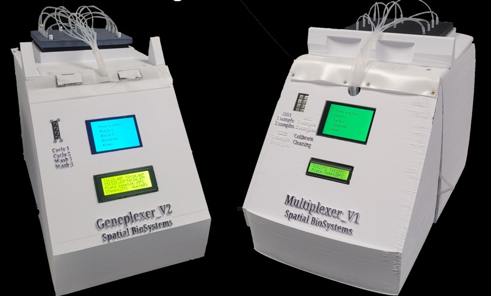
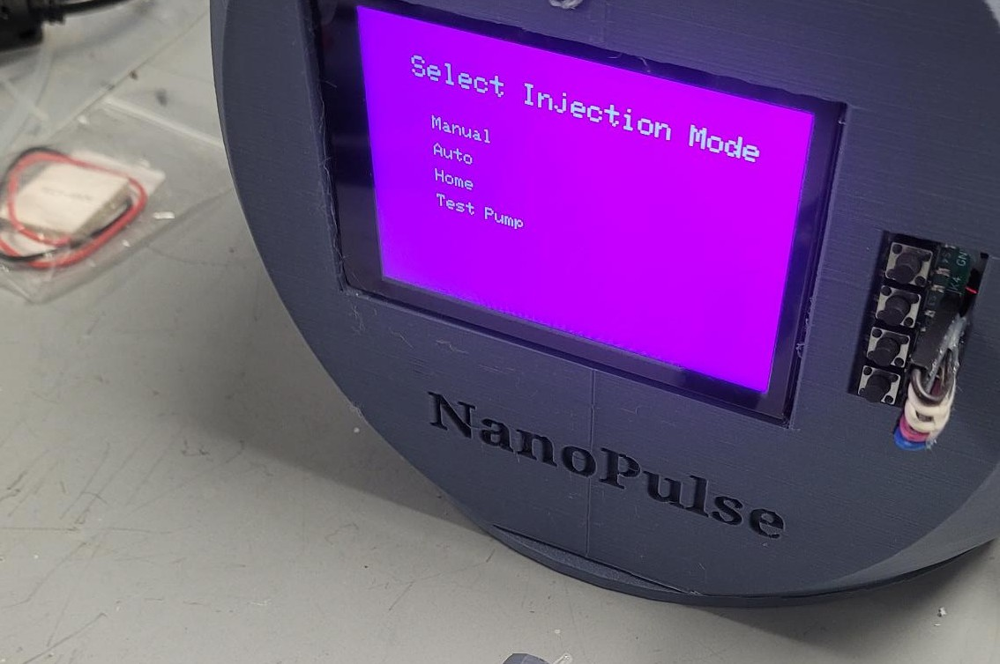
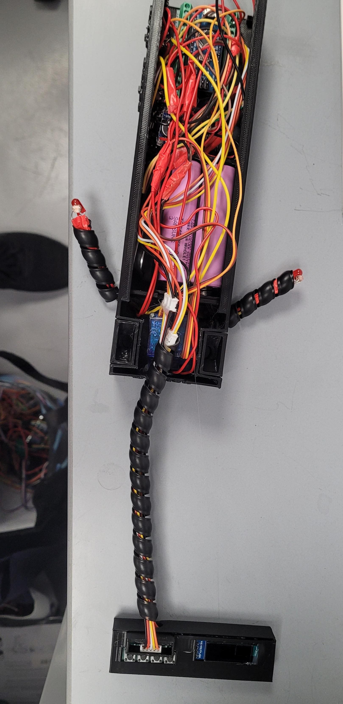
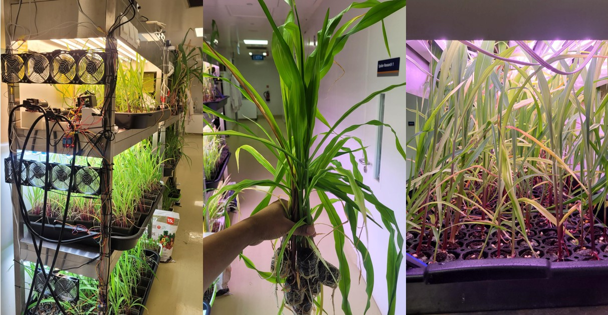

RAMFISH
Rapid Automated Multiplexed FISH
RAMFISH is an automated multiplex fluorescence in situ hybridization platform integrating fluidics, thermal control, and real-time imaging feedback to optimize hybridization and amplification cycles.
- Multiplex mRNA detection platform
- Affordable, accessable, and easy to use
- Accelerated automated protocol

NanoPulse Precision Microinjector
Controlled fluid delivery for CRISPR
A custom-built microinjection system using peristaltic pumping and microstepping control for precise nanoliter to microliter-scale delivery.
- ~0.03 µL pulse accuracy
- Programmable injection profiles
- Modular pump architecture
- Designed for embryos and tissue injections

FISHER
Feedback-driven Intelligent System for Hunger-aware Environmental Response
An automated aquatic feeding system for neurobehavioral assay, associative learning, and drug delivery.
- YOLO-based fish detection
- Behavior-triggered feeding logic
- Designed for laboratory fish models
- Designed for aging research

CORN-DRIVE: Autonomous Corn System
Closed-loop Observation and Robotic Nurture platform
A robotic plant monitoring platform for tracking corn growth dynamics, environmental responses, and developmental patterning over time.
- Time-lapse imaging
- Environmental sensing
- AI-driven phenotypic analysis
- Longitudinal growth modeling